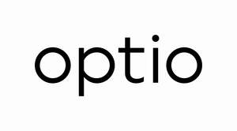
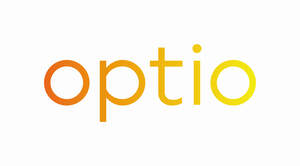
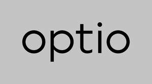
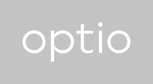

Trade Mark Journal No.2026/010 6 March 2026
UK00004340603 13 February 2026 (36)
Mark 1

Mark 2

Mark 3

Mark 4

The grey background for the logos in the series is considered transparent.
- Class 36
- Insurance; Insurance services; Provision of insurance services to insurance companies; Insurance administration; Administration of insurance plans; Administration of insurance portfolios; Administration of insurance business; Administration of group insurance; Arranging of insurance; Insurance agency services; Insurance consultation services; Insurance advice; Advisory services relating to insurance claims; Provision of insurance information; Underwriting; Insurance underwriting services; Insurance underwriting and appraisals and assessment for insurance purposes; Assurance underwriting; Annuity underwriting; Services for the underwriting of annuities; Administration, assessing and processing of insurance claims; Administration of insurance claims adjustment; Computerised processing of insurance claims; Insurance claim settlements; Insurance investigations; Insurance subrogation; Insurance guarantees; Insurance loss assessment; Insurance risk management; Insurance management services; Insurance premium rate computing; Providing insurance premium quotations; Estimates for insurance purposes; Evaluation for insurance purposes; Counterparty risk management; Actuarial services; Insurance actuarial services; Actuarial consulting and advisory services; Insurance brokerage services; Reinsurance; Reinsurance services; Reinsurance consultancy; Providing reinsurance information; Reinsurance underwriting; Reinsurance brokerage; Reinsurance actuarial services; Financial evaluation for reinsurance purposes; Provision of insurance services to reinsurance companies; Reinsurance claims processing; Reinsurance claim settlements; Accident and health insurance; Private medical insurance; Personal accident insurance; Personal indemnity insurance; Professional indemnity insurance; Directors and officers insurance; Cyber insurance; Crime insurance; Legal expenses insurance; Technology E&O (errors and omissions) insurance; Media E&O (errors and omissions) insurance; Consultants E&O (errors and omissions) insurance; Warranty and indemnity insurance; Tax insurance; Construction all risks insurance; Erection all risks insurance; Marine war insurance; Marine hull insurance; Marine liabilities insurance; Marine cargo insurance; US casualty insurance; Medical billings insurance; Sub contractor default insurance; Nuclear property insurance; Nuclear liability insurance; Political risk insurance; Credit insurance; Political violence and terrorism insurance; Kidnap and ransom insurance; Real estate insurance; Transactional liability insurance; Property insurance; Casualty insurance; Financial institutions insurance; Contingency insurance; Film insurance; Equine insurance; Diamond insurance; High net worth insurance; Fine art and galleries insurance; Land based equipment insurance; Cessione del quinto (salary-backed loans) insurance; Municipality insurance; Natural catastrophe insurance; Sports insurance; Small and medium enterprise insurance; Accident and health insurance underwriting; Private medical insurance underwriting; Personal accident insurance underwriting; Personal indemnity insurance underwriting; Professional indemnity insurance underwriting; Directors and officers insurance underwriting; Cyber insurance underwriting; Crime insurance underwriting; Legal expenses insurance underwriting; Technology E&O (errors and omissions) insurance underwriting; Media E&O (errors and omissions) insurance underwriting; Consultants E&O (errors and omissions) insurance underwriting; Warranty and indemnity insurance underwriting; Tax insurance underwriting; Construction all risks insurance underwriting; Erection all risks insurance underwriting; Marine war insurance underwriting; Marine hull insurance underwriting; Marine liabilities insurance underwriting; Marine cargo insurance underwriting; US casualty insurance underwriting; Medical billings insurance underwriting; Sub contractor default insurance underwriting; Nuclear property insurance underwriting; Nuclear liability insurance underwriting; Political risk insurance underwriting; Credit insurance underwriting; Political violence and terrorism insurance underwriting; Kidnap and ransom insurance underwriting; Real estate insurance underwriting; Transactional liability insurance underwriting; Property insurance underwriting; Casualty insurance underwriting; Financial institutions insurance underwriting; Contingency insurance underwriting; Film insurance underwriting; Equine insurance underwriting; Diamond insurance underwriting; High net worth insurance underwriting; Fine art and galleries insurance underwriting; Land based equipment insurance underwriting; Cessione del quinto (salary-backed loans) insurance underwriting; Municipality insurance underwriting; Natural catastrophe insurance underwriting; Sports insurance underwriting; Small and medium enterprise insurance underwriting; Accident and health insurance brokerage services; Private medical insurance brokerage services; Personal accident insurance brokerage services; Personal indemnity insurance brokerage services; Professional indemnity insurance brokerage services; Directors and officers insurance brokerage services; Cyber insurance brokerage services; Crime insurance brokerage services; Legal expenses insurance brokerage services; Technology E&O (errors and omissions) insurance brokerage services; Media E&O (errors and omissions) insurance brokerage services; Consultants E&O (errors and omissions) insurance brokerage services; Warranty and indemnity insurance brokerage services; Tax insurance brokerage services; Construction all risks insurance brokerage services; Erection all risks insurance brokerage services; Marine war insurance brokerage services; Marine hull insurance brokerage services; Marine liabilities insurance brokerage services; Marine cargo insurance brokerage services; US casualty insurance brokerage services; Medical billings insurance brokerage services; Sub contractor default insurance brokerage services; Nuclear property insurance brokerage services; Nuclear liability insurance brokerage services; Political risk insurance brokerage services; Credit insurance brokerage services; Political violence and terrorism insurance brokerage services; Kidnap and ransom insurance brokerage services; Real estate insurance brokerage services; Transactional liability insurance brokerage services; Property insurance brokerage services; Casualty insurance brokerage services; Financial institutions insurance brokerage services; Contingency insurance brokerage services; Film insurance brokerage services; Equine insurance brokerage services; Diamond insurance brokerage services; High net worth insurance brokerage services; Fine art and galleries insurance brokerage services; Land based equipment insurance brokerage services; Cessione del quinto (salary-backed loans) insurance brokerage services; Municipality insurance brokerage services; Natural catastrophe insurance brokerage services; Sports insurance brokerage services; Small and medium enterprise insurance brokerage services; Accident and health reinsurance services; Private medical reinsurance services; Personal accident reinsurance services; Personal indemnity reinsurance services; Professional indemnity reinsurance services; Directors and officers reinsurance services; Cyber reinsurance services; Crime reinsurance services; Legal expenses reinsurance services; Technology E&O (errors and omissions) reinsurance services; Media E&O (errors and omissions) reinsurance services; E&o (errors and omissions) reinsurance services; Warranty and indemnity reinsurance services; Tax reinsurance services; Construction all risks reinsurance services; Erection all risks reinsurance services; Marine war reinsurance services; Marine hull reinsurance services; Marine liabilities reinsurance services; Marine cargo reinsurance services; US casualty reinsurance services; Medical billings reinsurance services; Sub contractor default reinsurance services; Nuclear property reinsurance services; Nuclear liability reinsurance services; Political risk reinsurance services; Credit reinsurance services; Political violence and terrorism reinsurance services; Kidnap and ransom reinsurance services; Real estate reinsurance services; Transactional liability reinsurance services; Property reinsurance services; Casualty reinsurance services; Financial institutions reinsurance services; Contingency reinsurance services; Film reinsurance services; Equine reinsurance services; Diamond reinsurance services; High net worth reinsurance services; Fine art and galleries reinsurance services; Land based equipment reinsurance services; Cessione del quinto (salary-backed loans) reinsurance services; Municipality reinsurance services; Natural catastrophe reinsurance services; Sports reinsurance services; Small and medium enterprise reinsurance services.
Optio Group Limited
Representative: Stevens & Bolton LLP